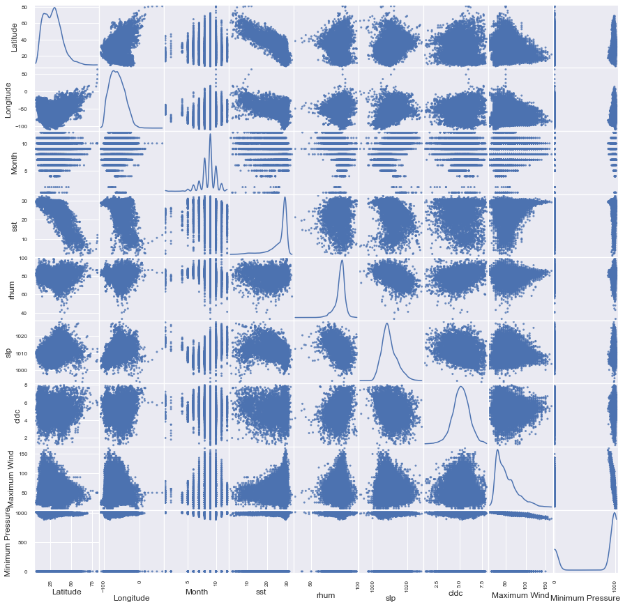
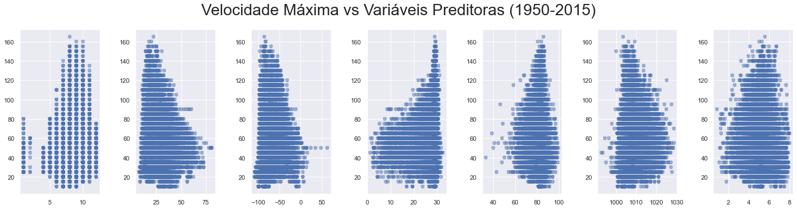
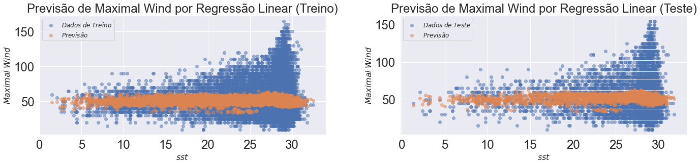
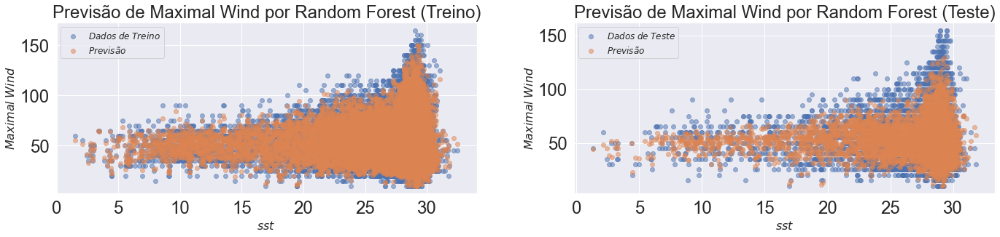
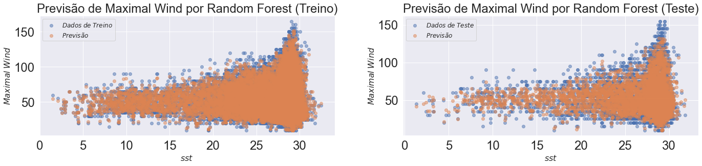
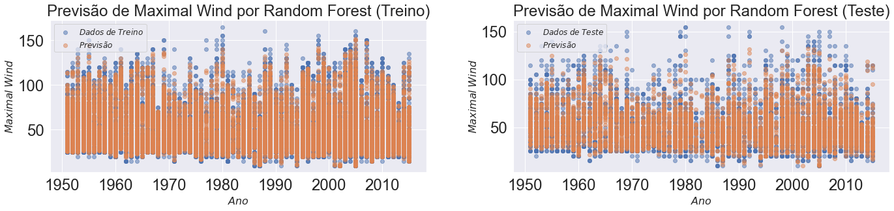
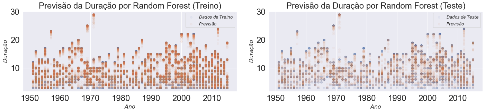
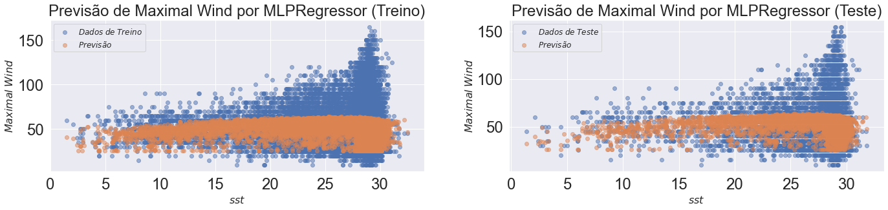

Aplicação de Modelos de Regressão
Neste Notebook, iremos importar os dados já limpados/filtrados em etapas anteriores e iremos aplicar diversos algoritmos visando ajustar uma boa regressão que nos ajude a prever as velocidades dos ventos de um determinado evento (Tropical Storm ou Hurricane) ou a duração dos mesmos. Algumas pequenas transformações serão necessárias para ajuste das variáveis preditoras a serem consideradas em cada modelo.
Instalação e Importação de Pacotes
Os códigos de instalação abaixo estão comentados. Na primeira utilização do Notebook, pode-se descomentá-los para instalar os pacotes que ainda não estejam instalados no computador que se esteja utilizando. Além disso, alguns pacotes abaixo são para utilização nos demais notebooks do projeto.
# !apt-get install libgeos-3.5.0
# !apt-get install libgeos-dev
# !pip install https://github.com/matplotlib/basemap/archive/master.zip
# !pip install pyproj==1.9.6
# !pip install netcdf4
# Dependencies for Tropycal Package: https://pypi.org/project/tropycal/
# matplotlib >= 2.2.2
# numpy >= 1.14.3
# scipy >= 1.1.0
# pandas >= 0.23.0
# geopy >= 1.18.1
# xarray >= 0.10.7
# networkx >= 2.0.0
# requests >= 2.22.0
# To fully leverage tropycal's plotting capabilities, it is strongly recommended to have cartopy >= 0.17.0 installed.
# !pip install numpy
# !pip install pandas
# !pip install matplotlib
# !pip install scipy
# !pip install geopy
# !pip install xarray
# !pip install networkx
# !pip install requests
# !pip install proj
# !pip install proj-data
# !pip install geos
# #!pip uninstall cartopy
# !apt-get -qq install python-cartopy python3-cartopy
# !pip install cartopy
# !pip install tropycal
# #!pip freeze
%matplotlib inline
import numpy as np
import matplotlib
import matplotlib.pyplot as plt
import matplotlib.colors as c
#from mpl_toolkits.basemap import Basemap,shiftgrid
import pandas as pd
import netCDF4 as nc
from itertools import chain
from netCDF4 import Dataset
from netCDF4 import date2index
from datetime import datetime
import scipy
import geopy
import xarray
import networkx
import requests
import cartopy
import tropycal
import tropycal.tracks as tracks
import tropycal.tornado as tornado
import datetime as dt
import statsmodels.api as sm
from statsmodels.api import OLS
# Modelos para Testes Futuros de Regressão
from sklearn.decomposition import PCA
from sklearn.linear_model import LogisticRegression
from sklearn.linear_model import LogisticRegressionCV
from sklearn.discriminant_analysis import LinearDiscriminantAnalysis
from sklearn.discriminant_analysis import QuadraticDiscriminantAnalysis
from sklearn.preprocessing import PolynomialFeatures
from sklearn.neighbors import KNeighborsClassifier
from sklearn.model_selection import cross_val_score
from sklearn.metrics import accuracy_score
from sklearn.model_selection import KFold
import math
from scipy.special import gamma
import seaborn as sns
sns.set()
alpha = 0.5
from sklearn import preprocessing
from pandas.plotting import scatter_matrix
from sklearn.ensemble import RandomForestRegressor
from sklearn.neural_network import MLPRegressor
from sklearn.model_selection import train_test_split
from sklearn import svm
#from sklearn.naive_bayes import GaussianNB
from sklearn.preprocessing import StandardScaler
from sklearn.model_selection import GroupShuffleSplit
from sklearn.model_selection import GroupKFold
from sklearn.datasets import make_friedman2
from sklearn.gaussian_process import GaussianProcessRegressor
from sklearn.gaussian_process.kernels import DotProduct, WhiteKernel
Carregamento e Preparação dos Dados
#Importação dos dados previamente estruturados
data_atl_merged = pd.read_csv('../Datasets/data_atl_merged2.csv')
print(data_atl_merged.columns)
data_atl_merged.head()
Index(['ID', 'Name', 'Date', 'Time', 'Event', 'Status', 'Latitude',
'Longitude', 'Maximum Wind', 'Minimum Pressure', 'Date_c', 'Year',
'Month', 'Day', 'Latitude_c', 'Longitude_c', 'Duration', 'sst', 'rhum',
'wspd', 'slp', 'cldc'],
dtype='object')
| ID | Name | Date | Time | Event | Status | Latitude | Longitude | Maximum Wind | Minimum Pressure | ... | Month | Day | Latitude_c | Longitude_c | Duration | sst | rhum | wspd | slp | cldc | |
|---|---|---|---|---|---|---|---|---|---|---|---|---|---|---|---|---|---|---|---|---|---|
| 0 | AL011951 | UNNAMED | 1951-01-02 | 1200 | NaN | EX | 30.5 | -58.0 | 50 | -999 | ... | 1 | 2 | 30.5 | -58.0 | 10 | 12.371029 | 72.457094 | 72.457094 | 1027.446055 | 5.219256 |
| 1 | AL011951 | UNNAMED | 1951-01-02 | 1800 | NaN | EX | 29.9 | -56.8 | 45 | -999 | ... | 1 | 2 | 29.9 | -56.8 | 10 | 16.217764 | 80.423854 | 80.423854 | 1022.672978 | 5.756614 |
| 2 | AL011951 | UNNAMED | 1951-01-03 | 0 | NaN | EX | 29.0 | -55.7 | 45 | -999 | ... | 1 | 3 | 29.0 | -55.7 | 10 | 15.491124 | 81.121590 | 81.121590 | 1023.151909 | 5.782474 |
| 3 | AL011951 | UNNAMED | 1951-01-03 | 600 | NaN | EX | 27.5 | -54.8 | 45 | -999 | ... | 1 | 3 | 27.5 | -54.8 | 10 | 22.268075 | 84.264761 | 84.264761 | 1019.325138 | 5.651842 |
| 4 | AL011951 | UNNAMED | 1951-01-03 | 1200 | NaN | EX | 26.5 | -54.5 | 45 | -999 | ... | 1 | 3 | 26.5 | -54.5 | 10 | 22.336746 | 84.458617 | 84.458617 | 1019.305866 | 5.645406 |
5 rows × 22 columns
y_train_mw = data_atl_merged['Maximum Wind']
y_train_mp = data_atl_merged['Minimum Pressure']
y_train_mp[y_train_mp < 0] = -1
y_train_dur = data_atl_merged['Duration']
X_train = data_atl_merged.drop(['ID', 'Name', 'Date', 'Time',
'Event', 'Status', 'Maximum Wind',
'Minimum Pressure', 'Date_c', 'Day',
'Latitude_c', 'Longitude_c', 'Duration'], 1)
#print(y_train_rad)
print(X_train.columns)
X_train.head()
Index(['Latitude', 'Longitude', 'Year', 'Month', 'sst', 'rhum', 'wspd', 'slp',
'cldc'],
dtype='object')
<ipython-input-16-44f50b930158>:3: SettingWithCopyWarning:
A value is trying to be set on a copy of a slice from a DataFrame
See the caveats in the documentation: https://pandas.pydata.org/pandas-docs/stable/user_guide/indexing.html#returning-a-view-versus-a-copy
y_train_mp[y_train_mp < 0] = -1
| Latitude | Longitude | Year | Month | sst | rhum | wspd | slp | cldc | |
|---|---|---|---|---|---|---|---|---|---|
| 0 | 30.5 | -58.0 | 1951 | 1 | 12.371029 | 72.457094 | 72.457094 | 1027.446055 | 5.219256 |
| 1 | 29.9 | -56.8 | 1951 | 1 | 16.217764 | 80.423854 | 80.423854 | 1022.672978 | 5.756614 |
| 2 | 29.0 | -55.7 | 1951 | 1 | 15.491124 | 81.121590 | 81.121590 | 1023.151909 | 5.782474 |
| 3 | 27.5 | -54.8 | 1951 | 1 | 22.268075 | 84.264761 | 84.264761 | 1019.325138 | 5.651842 |
| 4 | 26.5 | -54.5 | 1951 | 1 | 22.336746 | 84.458617 | 84.458617 | 1019.305866 | 5.645406 |
Modelos
X_train2 = sm.add_constant(X_train) #np.array(X_train).reshape(X_train.shape[0],1)
OLS_obj = OLS(y_train_mw, X_train2)
OLSModel = OLS_obj.fit()
r2_train = OLSModel.rsquared
#r2_test = 1 - ((OLSModel.predict(X_test2)-y_test)*(OLSModel.predict(X_test2)-y_test)).sum() / ((y_test.mean()-y_test)*(y_test.mean()-y_test)).sum()
print(f'R^2_train = {r2_train}')
#print(f'R^2_test = {r2_test}')
print(f'Parâmetro_const = {OLSModel.params[0]}')
print(f'Parâmetro_Year = {OLSModel.params[1]}')
print(f'Parâmetro_Month = {OLSModel.params[2]}')
print(f'Parâmetro_Latitude = {OLSModel.params[3]}')
print(f'Parâmetro_Longitude = {OLSModel.params[4]}')
print(f'Parâmetro_sst = {OLSModel.params[5]}')
print(f'Parâmetro_rhum = {OLSModel.params[6]}')
print(f'Parâmetro_wspd = {OLSModel.params[7]}')
print(f'Parâmetro_slp = {OLSModel.params[8]}')
print(f'Parâmetro_cldc = {OLSModel.params[9]}')
R^2_train = 0.02385621171100183
Parâmetro_const = 47.35464784180999
Parâmetro_Year = 0.09050506606867095
Parâmetro_Month = -0.05872870746380546
Parâmetro_Latitude = -0.08576970286238517
Parâmetro_Longitude = 1.880119707824508
Parâmetro_sst = 0.15179194438994867
Parâmetro_rhum = 0.028283243122749335
Parâmetro_wspd = 0.028283243122749446
Parâmetro_slp = 0.14971356534654948
Parâmetro_cldc = -1.5161434590996923
Os códigos abaixos nos geras uma visualização que pode trazer insights a respeito da relação entre as variáveis. A escolha das variáveis preditoras que servem de entrada para os modelos mais a frente foram pensadas também pela observação destes gráficos.
df = pd.concat([X_train, y_train_mw, y_train_mp], axis=1)
scatter_matrix(df, alpha=0.8, figsize=(15, 15), diagonal='kde');

# A princípio, não queremos que se faça alguma previsão com base no valor numérico do ano
# Além disso, a variável wspd está altamente correlacionada com a rhum, podendo ser mantida apenas a última
X_train = data_atl_merged.drop(['Year', 'wspd'], 1)
# Mês Latitude Longitude Temperatura, Umidade, Sea Level Pressure, Cloudiness]
# ['Month', 'Latitude', 'Longitude', 'sst', 'rhum', 'slp', 'cldc']
fig, ax = plt.subplots(1,7)#, figsize=(16,10))
fig.suptitle('Velocidade Máxima vs Variáveis Preditoras (1950-2015)', fontsize=28, y=1.06)
ax[0].scatter(X_train['Month'], X_train['Maximum Wind'], alpha = 0.5, ls = '--') #, label=r'$Furacões$ $=$ $0$')
ax[1].scatter(X_train['Latitude'], X_train['Maximum Wind'], alpha = 0.5, ls = '--') #, label=r'$Furacões$ $=$ $0$')
ax[2].scatter(X_train['Longitude'], X_train['Maximum Wind'], alpha = 0.5, ls = '--') #, label=r'$Furacões$ $=$ $0$')
ax[3].scatter(X_train['sst'], X_train['Maximum Wind'], alpha = 0.5, ls = '--') #, label=r'$Furacões$ $=$ $0$')
ax[4].scatter(X_train['rhum'], X_train['Maximum Wind'], alpha = 0.5, ls = '--') #, label=r'$Furacões$ $=$ $0$')
ax[5].scatter(X_train['slp'], X_train['Maximum Wind'], alpha = 0.5, ls = '--') #, label=r'$Furacões$ $=$ $0$')
ax[6].scatter(X_train['cldc'], X_train['Maximum Wind'], alpha = 0.5, ls = '--') #, label=r'$Furacões$ $=$ $0$')
#ax.plot([1850, 2015], [w0, w1], ls = '-.') #, label=r'$Furacões$ $=$ $0$')
'''
ax.tick_params(labelsize=24)
ax.set_title(f'Número de Furacões Anuais (1851-2015)', fontsize=24)
ax.set_xlabel(r'$Ano$', fontsize=16)
ax.set_ylabel(r'$Quantidade$', fontsize=16)
'''
#fig.legend(loc='best', fontsize=12);
fig.set_figheight(5)
fig.set_figwidth(20)
fig.tight_layout(pad=2.0)

X_train = data_atl_merged.drop(['ID', 'Name', 'Date', 'Time', 'Event', 'Status', 'Maximum Wind', 'Minimum Pressure', 'Date_c', 'Day', 'Latitude_c', 'Longitude_c', 'Duration', 'Year', 'wspd'], 1)
X_train.mean()
Latitude 27.466819
Longitude -62.607058
Month 8.709729
sst 26.416134
rhum 81.284651
slp 1009.678574
cldc 5.137222
dtype: float64
Uma primeira tentativa de ajuste foi feito através da centralização das variáveis preditoras em relação à média, adicionando também termos polinomiais de segunda ordem. No entanto, os resultados do ajuste não mostraram ganhos significativos para o modelo de Regressão Linear Múltipla, e até prejudicaram modelos mais complexos, como Random Forest, Multi Layer Perceptron, entre outros utilizados mais a frente.
# Tentativa de ajuste através de transformação de variáveis e inclusão de termos polinomiais
X_train['Month_mod'] = (X_train['Month'] - 8.788781)
X_train['Latitude_mod'] = (X_train['Latitude'] - 17.943038)
X_train['Longitude_mod'] = (X_train['Longitude'] + 62.555538)
X_train['sst_mod'] = (X_train['sst'] - 28.888685)
X_train['rhum_mod'] = (X_train['rhum'] - 82.051702)
X_train['slp_mod'] = (X_train['slp'] - 1008.611661)
X_train['cldc_mod'] = (X_train['cldc'] - 5.223518)
X_train['Month_mod^2'] = X_train['Month_mod']**2
X_train['Latitude_mod^2'] = X_train['Latitude_mod']**2
X_train['Longitude_mod^2'] = X_train['Longitude_mod']**2
X_train['sst_mod^2'] = X_train['sst_mod']**2
X_train['rhum_mod^2'] = X_train['rhum_mod']**2
X_train['slp_mod^2'] = X_train['slp_mod']**2
X_train['cldc_mod^2'] = X_train['cldc_mod']**2
X_train = X_train.drop(['Month', 'Latitude', 'Longitude', 'sst', 'rhum', 'slp', 'cldc'], 1)
X_train.head()
| Month_mod | Latitude_mod | Longitude_mod | sst_mod | rhum_mod | slp_mod | cldc_mod | Month_mod^2 | Latitude_mod^2 | Longitude_mod^2 | sst_mod^2 | rhum_mod^2 | slp_mod^2 | cldc_mod^2 | |
|---|---|---|---|---|---|---|---|---|---|---|---|---|---|---|
| 0 | -7.788781 | 12.556962 | 4.555538 | -16.517656 | -9.594608 | 18.834394 | -0.004262 | 60.665109 | 157.677295 | 20.752926 | 272.832952 | 92.056509 | 354.734396 | 0.000018 |
| 1 | -7.788781 | 11.956962 | 5.755538 | -12.670921 | -1.627848 | 14.061317 | 0.533096 | 60.665109 | 142.968940 | 33.126218 | 160.552231 | 2.649888 | 197.720622 | 0.284192 |
| 2 | -7.788781 | 11.056962 | 6.855538 | -13.397561 | -0.930112 | 14.540248 | 0.558956 | 60.665109 | 122.256409 | 46.998401 | 179.494647 | 0.865108 | 211.418806 | 0.312431 |
| 3 | -7.788781 | 9.556962 | 7.755538 | -6.620610 | 2.213059 | 10.713477 | 0.428324 | 60.665109 | 91.335523 | 60.148370 | 43.832480 | 4.897629 | 114.778588 | 0.183461 |
| 4 | -7.788781 | 8.556962 | 8.055538 | -6.551939 | 2.406915 | 10.694205 | 0.421888 | 60.665109 | 73.221599 | 64.891692 | 42.927902 | 5.793238 | 114.366028 | 0.177989 |
Regressão Linear
X_train2 = sm.add_constant(X_train) #np.array(X_train).reshape(X_train.shape[0],1)
OLS_obj = OLS(y_train_mw, X_train2)
OLSModel = OLS_obj.fit()
r2_train = OLSModel.rsquared
#r2_test = 1 - ((OLSModel.predict(X_test2)-y_test)*(OLSModel.predict(X_test2)-y_test)).sum() / ((y_test.mean()-y_test)*(y_test.mean()-y_test)).sum()
print(f'R^2_train = {r2_train}')
#print(f'R^2_test = {r2_test}')
print(f'Parâmetro_const = {OLSModel.params[0]}')
print(f'Parâmetro_Month = {OLSModel.params[1]}')
print(f'Parâmetro_Latitude = {OLSModel.params[2]}')
print(f'Parâmetro_Longitude = {OLSModel.params[3]}')
print(f'Parâmetro_sst = {OLSModel.params[4]}')
print(f'Parâmetro_rhum = {OLSModel.params[5]}')
print(f'Parâmetro_slp = {OLSModel.params[6]}')
print(f'Parâmetro_cldc = {OLSModel.params[7]}')
print(f'Parâmetro_Month^2 = {OLSModel.params[8]}')
print(f'Parâmetro_Latitude^2 = {OLSModel.params[9]}')
print(f'Parâmetro_Longitude^2 = {OLSModel.params[10]}')
print(f'Parâmetro_sst^2 = {OLSModel.params[11]}')
print(f'Parâmetro_rhum^2 = {OLSModel.params[12]}')
print(f'Parâmetro_slp^2 = {OLSModel.params[13]}')
print(f'Parâmetro_cldc^2 = {OLSModel.params[14]}')
R^2_train = 0.057796565423244184
Parâmetro_const = 55.44314399378881
Parâmetro_Month = 0.8453623447457261
Parâmetro_Latitude = 0.3457362098822069
Parâmetro_Longitude = -0.02891517619557605
Parâmetro_sst = 0.02964116885731194
Parâmetro_rhum = 0.09964668732077198
Parâmetro_slp = 0.289107953297979
Parâmetro_cldc = -0.5559643046414668
Parâmetro_Month^2 = -0.48473747846473236
Parâmetro_Latitude^2 = -0.017728720785750357
Parâmetro_Longitude^2 = -0.00855022784566639
Parâmetro_sst^2 = 0.051566532947100174
Parâmetro_rhum^2 = 0.002209669018392528
Parâmetro_slp^2 = -0.03379242085061111
Parâmetro_cldc^2 = -0.16931736469014314
X_train = data_atl_merged.drop(['ID', 'Name', 'Date', 'Time', 'Event', 'Status', 'Maximum Wind', 'Minimum Pressure', 'Date_c', 'Day', 'Latitude_c', 'Longitude_c', 'Duration', 'Year', 'wspd'], 1)
y_train_mw = data_atl_merged['Maximum Wind']
X_train, X_test, y_train_mw, y_test_mw = train_test_split(X_train, y_train_mw, random_state=1)
print(len(X_train))
X_train.head()
16789
| Latitude | Longitude | Month | sst | rhum | slp | cldc | |
|---|---|---|---|---|---|---|---|
| 10353 | 26.2 | -78.2 | 8 | 28.981304 | 82.394811 | 1006.801278 | 4.477195 |
| 19374 | 14.5 | -69.6 | 10 | 28.904502 | 82.054564 | 1010.190954 | 5.367316 |
| 12393 | 30.7 | -86.3 | 7 | 28.347659 | 82.523253 | 1000.820020 | 6.652682 |
| 3373 | 40.9 | -70.7 | 9 | 24.981041 | 77.434502 | 1012.284426 | 4.131097 |
| 21173 | 25.8 | -42.5 | 9 | 28.643885 | 78.809962 | 1013.124650 | 4.610140 |
Random Forest
Primeira tentativa de ajuste já nos parece promissor em relação aos demais.
#X_train, y_train_mw = make_regression(n_features=7, n_informative=2, random_state=0, shuffle=False)
regr = RandomForestRegressor(n_estimators=7, max_depth=20, random_state=0)
regr.fit(X_train, y_train_mw)
print(regr.score(X_train, y_train_mw))
print(regr.score(X_test, y_test_mw))
0.8272253680614361
0.4358801020027704
#X_train = data_atl_merged.drop(['ID', 'Name', 'Date', 'Time', 'Event', 'Status', 'Maximum Wind', 'Minimum Pressure', 'Date_c', 'Day', 'Latitude_c', 'Longitude_c', 'Duration', 'Year', 'wspd'], 1)
#X_train.head()
Multi Layer Perceptron
#X_train, y_train_mw = make_regression(n_samples=200, random_state=1)
regr = MLPRegressor(hidden_layer_sizes=(100,2), random_state=1, max_iter=1000, solver='lbfgs').fit(X_train, y_train_mw)
#regr.predict(X_test[:2])
print(regr.score(X_train, y_train_mw))
print(regr.score(X_test, y_test_mw))
0.09520915346048042
0.08725614810614979
/home/gambitura/anaconda3/lib/python3.8/site-packages/sklearn/neural_network/_multilayer_perceptron.py:471: ConvergenceWarning: lbfgs failed to converge (status=1):
STOP: TOTAL NO. of ITERATIONS REACHED LIMIT.
Increase the number of iterations (max_iter) or scale the data as shown in:
https://scikit-learn.org/stable/modules/preprocessing.html
self.n_iter_ = _check_optimize_result("lbfgs", opt_res, self.max_iter)
Modelos com Separação em Conjuntos de Treino e Teste
Separamos os dados em conjuntos de treino e de teste. Deste modo, podemos ajustar o algoritmo utilizando os dados de treino, e tentar utilizar esses dados de teste para previsão de outros dados, inclusive futuros.
X_train = data_atl_merged.drop(['ID', 'Name', 'Date', 'Time', 'Event', 'Status', 'Maximum Wind', 'Minimum Pressure', 'Date_c', 'Day', 'Latitude_c', 'Longitude_c', 'Duration', 'Year', 'wspd'], 1)
y_train_mw = data_atl_merged['Maximum Wind']
#print(len(X_train))
#X_train.head()
X_train, X_test, y_train_mw, y_test_mw = train_test_split(X_train, y_train_mw, random_state=1)
Regressão Linear
X_train2 = sm.add_constant(X_train) #np.array(X_train).reshape(X_train.shape[0],1)
X_test2 = sm.add_constant(X_test) #np.array(X_train).reshape(X_train.shape[0],1)
OLS_obj = OLS(y_train_mw, X_train2)
OLSModel = OLS_obj.fit()
r2_train = OLSModel.rsquared
r2_test = 1 - ((OLSModel.predict(X_test2)-y_test_mw)*(OLSModel.predict(X_test2)-y_test_mw)).sum() / ((y_test_mw.mean()-y_test_mw)*(y_test_mw.mean()-y_test_mw)).sum()
print(f'R^2_train = {r2_train}')
print(f'R^2_test = {r2_test}')
'''
print(f'Parâmetro_const = {OLSModel.params[0]}')
print(f'Parâmetro_Month = {OLSModel.params[1]}')
print(f'Parâmetro_Latitude = {OLSModel.params[2]}')
print(f'Parâmetro_Longitude = {OLSModel.params[3]}')
print(f'Parâmetro_sst = {OLSModel.params[4]}')
print(f'Parâmetro_rhum = {OLSModel.params[5]}')
print(f'Parâmetro_slp = {OLSModel.params[6]}')
print(f'Parâmetro_cldc = {OLSModel.params[7]}')
print(f'Parâmetro_Month^2 = {OLSModel.params[8]}')
print(f'Parâmetro_Latitude^2 = {OLSModel.params[9]}')
print(f'Parâmetro_Longitude^2 = {OLSModel.params[10]}')
print(f'Parâmetro_sst^2 = {OLSModel.params[11]}')
print(f'Parâmetro_rhum^2 = {OLSModel.params[12]}')
print(f'Parâmetro_slp^2 = {OLSModel.params[13]}')
print(f'Parâmetro_cldc^2 = {OLSModel.params[14]}')
'''
R^2_train = 0.019806236602926464
R^2_test = 0.01874952522766249
"\nprint(f'Parâmetro_const = {OLSModel.params[0]}')\nprint(f'Parâmetro_Month = {OLSModel.params[1]}')\nprint(f'Parâmetro_Latitude = {OLSModel.params[2]}')\nprint(f'Parâmetro_Longitude = {OLSModel.params[3]}')\nprint(f'Parâmetro_sst = {OLSModel.params[4]}')\nprint(f'Parâmetro_rhum = {OLSModel.params[5]}')\nprint(f'Parâmetro_slp = {OLSModel.params[6]}')\nprint(f'Parâmetro_cldc = {OLSModel.params[7]}')\n\nprint(f'Parâmetro_Month^2 = {OLSModel.params[8]}')\nprint(f'Parâmetro_Latitude^2 = {OLSModel.params[9]}')\nprint(f'Parâmetro_Longitude^2 = {OLSModel.params[10]}')\nprint(f'Parâmetro_sst^2 = {OLSModel.params[11]}')\nprint(f'Parâmetro_rhum^2 = {OLSModel.params[12]}')\nprint(f'Parâmetro_slp^2 = {OLSModel.params[13]}')\nprint(f'Parâmetro_cldc^2 = {OLSModel.params[14]}')\n"
fig, ax = plt.subplots(1,2)#, figsize=(16,10))
#fig.suptitle('Velocidade Máxima vs Pressão Mínima (1851-2015)', fontsize=28, y=1.06)
ax[0].scatter(X_train['sst'], y_train_mw, alpha=0.5, label=r'$Dados$ $de$ $Treino$')
ax[0].scatter(X_train['sst'], OLSModel.predict(X_train2), alpha=0.5, label=r'$Previsão$')
ax[1].scatter(X_test['sst'], y_test_mw, alpha=0.5, label=r'$Dados$ $de$ $Teste$')
ax[1].scatter(X_test['sst'], OLSModel.predict(X_test2), alpha=0.5, label=r'$Previsão$')
ax[0].tick_params(labelsize=24)
ax[0].set_title(f'Previsão de Maximal Wind por Regressão Linear (Treino)', fontsize=24)
ax[0].set_xlabel(r'$sst$', fontsize=16)
ax[0].set_ylabel(r'$Maximal$ $Wind$', fontsize=16)
ax[0].legend(loc='best', fontsize=12);
ax[1].tick_params(labelsize=24)
ax[1].set_title(f'Previsão de Maximal Wind por Regressão Linear (Teste)', fontsize=24)
ax[1].set_xlabel(r'$sst$', fontsize=16)
ax[1].set_ylabel(r'$Maximal$ $Wind$', fontsize=16)
ax[1].legend(loc='best', fontsize=12);
fig.set_figheight(5)
fig.set_figwidth(20)
fig.tight_layout(pad=2.0)

Random Forest
Pelos ajustes anteriores, vimos que esse algoritmo promove um bom ajuste nos dados. Um novo ajuste com aplicação de parâmetros melhor sintonizados com os dados é buscado pelo código abaixo.
# Parâmetros com bom ajuste para Random Forest: n_estimators = 50, max_depth = 75
for i in [25, 50, 75, 100, 125]:
for j in [25, 50, 75, 100, 125]:
regr_rf = RandomForestRegressor(n_estimators=i, max_depth=j, random_state=0, oob_score=True, bootstrap = True)
regr_rf.fit(X_train, y_train_mw)
print(f'\n n_estimators={i}, max_depth={j}')
print(regr_rf.score(X_train, y_train_mw))
print(regr_rf.score(X_test, y_test_mw))
n_estimators=25, max_depth=25
0.9109127406378082
0.5049385543175804
n_estimators=25, max_depth=50
0.9231191839999706
0.5083859136052509
n_estimators=25, max_depth=75
0.9231191839999706
0.5083859136052509
n_estimators=25, max_depth=100
0.9231191839999706
0.5083859136052509
n_estimators=25, max_depth=125
0.9231191839999706
0.5083859136052509
n_estimators=50, max_depth=25
0.9177312843005485
0.5190516352697632
n_estimators=50, max_depth=50
0.9298001112559356
0.5227899508473133
n_estimators=50, max_depth=75
0.9298001112559356
0.5227899508473133
n_estimators=50, max_depth=100
0.9298001112559356
0.5227899508473133
n_estimators=50, max_depth=125
0.9298001112559356
0.5227899508473133
n_estimators=75, max_depth=25
0.9198026089627763
0.5227499387064152
n_estimators=75, max_depth=50
0.9323017737677339
0.5256624725114608
n_estimators=75, max_depth=75
0.9323017737677339
0.5256624725114608
n_estimators=75, max_depth=100
0.9323017737677339
0.5256624725114608
n_estimators=75, max_depth=125
0.9323017737677339
0.5256624725114608
n_estimators=100, max_depth=25
0.9198383784088979
0.5224954900261807
n_estimators=100, max_depth=50
0.9336736647334395
0.5269361337556209
n_estimators=100, max_depth=75
0.9336736647334395
0.5269361337556209
n_estimators=100, max_depth=100
0.9336736647334395
0.5269361337556209
n_estimators=100, max_depth=125
0.9336736647334395
0.5269361337556209
n_estimators=125, max_depth=25
0.9204444093451314
0.5234545174002654
n_estimators=125, max_depth=50
0.9344355008748928
0.5280216690661794
n_estimators=125, max_depth=75
0.9344355008748928
0.5280216690661794
n_estimators=125, max_depth=100
0.9344355008748928
0.5280216690661794
n_estimators=125, max_depth=125
0.9344355008748928
0.5280216690661794
O R2 Score obtido abaixo mostra o melhor ajuste do modelo quando tentamos prever a Velocidade Máxima Sustentada pelo algoritmo do Random Forest. O ajuste aos dados de treino ficam
regr_rf = RandomForestRegressor(n_estimators=50, max_depth=75, random_state=0, oob_score=True, bootstrap = True)
regr_rf.fit(X_train, y_train_mw)
print(regr_rf.score(X_train, y_train_mw))
print(regr_rf.score(X_test, y_test_mw))
0.9298001112559356
0.5227899508473133
X_train_red = X_train.drop(['sst', 'rhum', 'slp', 'cldc'], 1)
X_test_red = X_test.drop(['sst', 'rhum', 'slp', 'cldc'], 1)
Retirando os dados climáticos, observamos que o ajuste fica bem pior, mostrando a importância dos mesmos para a predição
regr_rf_red = RandomForestRegressor(n_estimators=50, max_depth=75, random_state=0, oob_score=True, bootstrap = True)
regr_rf_red.fit(X_train_red, y_train_mw)
print(regr_rf_red.score(X_train_red, y_train_mw))
print(regr_rf_red.score(X_test_red, y_test_mw))
0.8598571752407663
0.06143697855472363
X_train_red = X_train.drop(['Month', 'Latitude', 'Longitude'], 1)
X_test_red = X_test.drop(['Month', 'Latitude', 'Longitude'], 1)
regr_rf_red = RandomForestRegressor(n_estimators=50, max_depth=75, random_state=0, oob_score=True, bootstrap = True)
regr_rf_red.fit(X_train_red, y_train_mw)
print(regr_rf_red.score(X_train_red, y_train_mw))
print(regr_rf_red.score(X_test_red, y_test_mw))
0.9072010288584739
0.3833348196160016
#['Month', 'Latitude', 'Longitude', 'sst', 'rhum', 'slp', 'cldc']
X_train_red = X_train.drop(['Month'], 1)
X_test_red = X_test.drop(['Month'], 1)
regr_rf_red = RandomForestRegressor(n_estimators=50, max_depth=75, random_state=0, oob_score=True, bootstrap = True)
regr_rf_red.fit(X_train_red, y_train_mw)
print(regr_rf_red.score(X_train_red, y_train_mw))
print(regr_rf_red.score(X_test_red, y_test_mw))
0.9230537875398801
0.4840455607978509
Ajuste da predição em relação à variável sst (temperatura mensal média)
fig, ax = plt.subplots(1,2)#, figsize=(16,10))
#fig.suptitle('Velocidade Máxima vs Pressão Mínima (1851-2015)', fontsize=28, y=1.06)
ax[0].scatter(X_train['sst'], y_train_mw, alpha=0.5, label=r'$Dados$ $de$ $Treino$')
ax[0].scatter(X_train['sst'], regr_rf.predict(X_train), alpha=0.5, label=r'$Previsão$')
ax[1].scatter(X_test['sst'], y_test_mw, alpha=0.5, label=r'$Dados$ $de$ $Teste$')
ax[1].scatter(X_test['sst'], regr_rf.predict(X_test), alpha=0.5, label=r'$Previsão$')
ax[0].tick_params(labelsize=24)
ax[0].set_title(f'Previsão de Maximal Wind por Random Forest (Treino)', fontsize=24)
ax[0].set_xlabel(r'$sst$', fontsize=16)
ax[0].set_ylabel(r'$Maximal$ $Wind$', fontsize=16)
ax[0].legend(loc='best', fontsize=12);
ax[1].tick_params(labelsize=24)
ax[1].set_title(f'Previsão de Maximal Wind por Random Forest (Teste)', fontsize=24)
ax[1].set_xlabel(r'$sst$', fontsize=16)
ax[1].set_ylabel(r'$Maximal$ $Wind$', fontsize=16)
ax[1].legend(loc='best', fontsize=12);
fig.set_figheight(5)
fig.set_figwidth(20)
fig.tight_layout(pad=2.0)

Demais Previsões com Random Forest (Melhor Ajuste)
Adicionando as variáveis Ano e Dia, conseguimos melhorar significativamente a capacidade de previsão do nosso modelo. Se adicionarmos primeiramente apenas a variável Ano, percebemos que cada variável contribui um pouco para a melhoria da previsão.
data_train_sd = data_atl_merged.drop(['ID', 'Name', 'Date', 'Time', 'Event', 'Status', 'Maximum Wind', 'Minimum Pressure', 'Date_c', 'Latitude_c', 'Longitude_c', 'Duration', 'wspd', 'Day'], 1)
data_train_mw_sd = data_atl_merged['Maximum Wind']
#print(len(data_train))
#data_train.head()
data_train_sd, data_test_sd, data_train_mw_sd, data_test_mw_sd = train_test_split(data_train_sd, data_train_mw_sd, random_state=1)
regr_rf2_sd = RandomForestRegressor(n_estimators=50, max_depth=75, random_state=0, oob_score=True, bootstrap = True)
regr_rf2_sd.fit(data_train_sd, data_train_mw_sd)
print(regr_rf2_sd.score(data_train_sd, data_train_mw_sd))
print(regr_rf2_sd.score(data_test_sd, data_test_mw_sd))
0.9502630426894276
0.6609429559863542
data_train = data_atl_merged.drop(['ID', 'Name', 'Date', 'Time', 'Event', 'Status', 'Maximum Wind', 'Minimum Pressure', 'Date_c', 'Latitude_c', 'Longitude_c', 'Duration', 'wspd'], 1)
data_train_mw = data_atl_merged['Maximum Wind']
#print(len(data_train))
#data_train.head()
data_train, data_test, data_train_mw, data_test_mw = train_test_split(data_train, data_train_mw, random_state=1)
Ajuste fino dos parâmetros do Random Forest
for i in [25, 50, 75, 100, 125]:
for j in [25, 50, 75, 100, 125]:
regr_rf2 = RandomForestRegressor(n_estimators=i, max_depth=j, random_state=0, oob_score=True, bootstrap = True)
regr_rf2.fit(data_train, data_train_mw)
print(f'\n n_estimators={i}, max_depth={j}')
print(regr_rf2.score(data_train, data_train_mw))
print(regr_rf2.score(data_test, data_test_mw))
n_estimators=25, max_depth=25
0.957264562824329
0.7444676687346707
n_estimators=25, max_depth=50
0.9582917968925033
0.7442935073801389
n_estimators=25, max_depth=75
0.9582917968925033
0.7442935073801389
n_estimators=25, max_depth=100
0.9582917968925033
0.7442935073801389
n_estimators=25, max_depth=125
0.9582917968925033
0.7442935073801389
n_estimators=50, max_depth=25
0.9617003376388379
0.7583441990969142
n_estimators=50, max_depth=50
0.9629951225598822
0.7593567448937373
n_estimators=50, max_depth=75
0.9629951225598822
0.7593567448937373
n_estimators=50, max_depth=100
0.9629951225598822
0.7593567448937373
n_estimators=50, max_depth=125
0.9629951225598822
0.7593567448937373
n_estimators=75, max_depth=25
0.9637876668338223
0.7615184996888411
n_estimators=75, max_depth=50
0.9651229272756359
0.7623946732426374
n_estimators=75, max_depth=75
0.9651229272756359
0.7623946732426374
n_estimators=75, max_depth=100
0.9651229272756359
0.7623946732426374
n_estimators=75, max_depth=125
0.9651229272756359
0.7623946732426374
n_estimators=100, max_depth=25
0.9643667689055675
0.7618762745120209
n_estimators=100, max_depth=50
0.9657927394363737
0.7630103360785616
n_estimators=100, max_depth=75
0.9657927394363737
0.7630103360785616
n_estimators=100, max_depth=100
0.9657927394363737
0.7630103360785616
n_estimators=100, max_depth=125
0.9657927394363737
0.7630103360785616
n_estimators=125, max_depth=25
0.9647081307547872
0.762938280257875
n_estimators=125, max_depth=50
0.9661419630929642
0.7643016255435418
n_estimators=125, max_depth=75
0.9661419630929642
0.7643016255435418
n_estimators=125, max_depth=100
0.9661419630929642
0.7643016255435418
n_estimators=125, max_depth=125
0.9661419630929642
0.7643016255435418
Melhor ajuste para Previsão de Maximal Wind
regr_rf2 = RandomForestRegressor(n_estimators=50, max_depth=50, random_state=0, oob_score=True, bootstrap = True)
regr_rf2.fit(data_train, data_train_mw)
print(regr_rf2.score(data_train, data_train_mw))
print(regr_rf2.score(data_test, data_test_mw))
0.9629951225598822
0.7593567448937373
fig, ax = plt.subplots(1,2)#, figsize=(16,10))
#fig.suptitle('Velocidade Máxima vs Pressão Mínima (1851-2015)', fontsize=28, y=1.06)
ax[0].scatter(data_train['sst'], data_train_mw, alpha=0.5, label=r'$Dados$ $de$ $Treino$')
ax[0].scatter(data_train['sst'], regr_rf2.predict(data_train), alpha=0.5, label=r'$Previsão$')
ax[1].scatter(data_test['sst'], data_test_mw, alpha=0.5, label=r'$Dados$ $de$ $Teste$')
ax[1].scatter(data_test['sst'], regr_rf2.predict(data_test), alpha=0.5, label=r'$Previsão$')
ax[0].tick_params(labelsize=24)
ax[0].set_title(f'Previsão de Maximal Wind por Random Forest (Treino)', fontsize=24)
ax[0].set_xlabel(r'$sst$', fontsize=16)
ax[0].set_ylabel(r'$Maximal$ $Wind$', fontsize=16)
ax[0].legend(loc='best', fontsize=12);
ax[1].tick_params(labelsize=24)
ax[1].set_title(f'Previsão de Maximal Wind por Random Forest (Teste)', fontsize=24)
ax[1].set_xlabel(r'$sst$', fontsize=16)
ax[1].set_ylabel(r'$Maximal$ $Wind$', fontsize=16)
ax[1].legend(loc='best', fontsize=12);
fig.set_figheight(5)
fig.set_figwidth(20)
fig.tight_layout(pad=2.0)

fig, ax = plt.subplots(1,2)#, figsize=(16,10))
#fig.suptitle('Velocidade Máxima vs Pressão Mínima (1851-2015)', fontsize=28, y=1.06)
data_concat_train = pd.concat([data_train, data_train_mw], axis=1)
data_concat_test = pd.concat([data_test, data_test_mw], axis=1)
ax[0].scatter(data_concat_train['Year'], data_concat_train['Maximum Wind'], alpha=0.5, label=r'$Dados$ $de$ $Treino$')
ax[0].scatter(data_concat_train['Year'], regr_rf2.predict(data_train), alpha=0.5, label=r'$Previsão$')
ax[1].scatter(data_concat_test['Year'], data_concat_test['Maximum Wind'], alpha=0.5, label=r'$Dados$ $de$ $Teste$')
ax[1].scatter(data_concat_test['Year'], regr_rf2.predict(data_test), alpha=0.5, label=r'$Previsão$')
ax[0].tick_params(labelsize=24)
ax[0].set_title(f'Previsão de Maximal Wind por Random Forest (Treino)', fontsize=24)
ax[0].set_xlabel(r'$Ano$', fontsize=16)
ax[0].set_ylabel(r'$Maximal$ $Wind$', fontsize=16)
ax[0].legend(loc='best', fontsize=12);
ax[1].tick_params(labelsize=24)
ax[1].set_title(f'Previsão de Maximal Wind por Random Forest (Teste)', fontsize=24)
ax[1].set_xlabel(r'$Ano$', fontsize=16)
ax[1].set_ylabel(r'$Maximal$ $Wind$', fontsize=16)
ax[1].legend(loc='best', fontsize=12);
fig.set_figheight(5)
fig.set_figwidth(20)
fig.tight_layout(pad=2.0)

Previsão da duração dos eventos de Furacão
data_train2 = data_atl_merged.drop(['ID', 'Name', 'Date', 'Time', 'Event', 'Status', 'Maximum Wind', 'Minimum Pressure', 'Date_c', 'Latitude_c', 'Longitude_c', 'Duration', 'wspd'], 1)
#data_train_mw = data_atl_merged['Maximum Wind']
data_train_dur = data_atl_merged['Duration']
#print(len(data_train))
#data_train.head()
data_train2, data_test2, data_train_dur, data_test_dur = train_test_split(data_train2, data_train_dur, random_state=1)
Abaixo, faremos também a previsão da duração de um Furacão. O ajuste fica bem preciso, como se pode ver pelo R2 Score
regr_rf3 = RandomForestRegressor(n_estimators=50, max_depth=75, random_state=0, oob_score=True, bootstrap = True)
regr_rf3.fit(data_train2, data_train_dur)
print(regr_rf3.score(data_train2, data_train_dur))
print(regr_rf3.score(data_test2, data_test_dur))
0.9883397102866289
0.9289716458290775
fig, ax = plt.subplots(1,2)#, figsize=(16,10))
#fig.suptitle('Velocidade Máxima vs Pressão Mínima (1851-2015)', fontsize=28, y=1.06)
data_concat_train = pd.concat([data_train, data_train_mw, data_train_dur], axis=1)
data_concat_test = pd.concat([data_test, data_test_mw, data_test_dur], axis=1)
ax[0].scatter(data_concat_train['Year'], data_concat_train['Duration'], alpha=0.05, label=r'$Dados$ $de$ $Treino$')
ax[0].scatter(data_concat_train['Year'], regr_rf3.predict(data_train2), alpha=0.05, label=r'$Previsão$')
ax[1].scatter(data_concat_test['Year'], data_concat_test['Duration'], alpha=0.05, label=r'$Dados$ $de$ $Teste$')
ax[1].scatter(data_concat_test['Year'], regr_rf3.predict(data_test2), alpha=0.05, label=r'$Previsão$')
ax[0].tick_params(labelsize=24)
ax[0].set_title(f'Previsão da Duração por Random Forest (Treino)', fontsize=24)
ax[0].set_xlabel(r'$Ano$', fontsize=16)
ax[0].set_ylabel(r'$Duração$', fontsize=16)
ax[0].legend(loc='best', fontsize=12);
ax[1].tick_params(labelsize=24)
ax[1].set_title(f'Previsão da Duração por Random Forest (Teste)', fontsize=24)
ax[1].set_xlabel(r'$Ano$', fontsize=16)
ax[1].set_ylabel(r'$Duração$', fontsize=16)
ax[1].legend(loc='best', fontsize=12);
fig.set_figheight(5)
fig.set_figwidth(20)
fig.tight_layout(pad=2.0)

Multi Layer Perceptron
regr_mlp = MLPRegressor(hidden_layer_sizes=(100,2), random_state=1, max_iter=1000, solver='lbfgs', activation='relu').fit(X_train, y_train_mw)
#regr.predict(X_test[:2])
print(regr_mlp.score(X_train, y_train_mw))
print(regr_mlp.score(X_test, y_test_mw))
/home/gambitura/anaconda3/lib/python3.8/site-packages/sklearn/neural_network/_multilayer_perceptron.py:471: ConvergenceWarning: lbfgs failed to converge (status=1):
STOP: TOTAL NO. of ITERATIONS REACHED LIMIT.
Increase the number of iterations (max_iter) or scale the data as shown in:
https://scikit-learn.org/stable/modules/preprocessing.html
self.n_iter_ = _check_optimize_result("lbfgs", opt_res, self.max_iter)
0.09520915346048042
0.08725614810614979
fig, ax = plt.subplots(1,2)#, figsize=(16,10))
#fig.suptitle('Velocidade Máxima vs Pressão Mínima (1851-2015)', fontsize=28, y=1.06)
ax[0].scatter(X_train['sst'], y_train_mw, alpha=0.5, label=r'$Dados$ $de$ $Treino$')
ax[0].scatter(X_train['sst'], regr_mlp.predict(X_train), alpha=0.5, label=r'$Previsão$')
ax[1].scatter(X_test['sst'], y_test_mw, alpha=0.5, label=r'$Dados$ $de$ $Teste$')
ax[1].scatter(X_test['sst'], regr_mlp.predict(X_test), alpha=0.5, label=r'$Previsão$')
ax[0].tick_params(labelsize=24)
ax[0].set_title(f'Previsão de Maximal Wind por MLPRegressor (Treino)', fontsize=24)
ax[0].set_xlabel(r'$sst$', fontsize=16)
ax[0].set_ylabel(r'$Maximal$ $Wind$', fontsize=16)
ax[0].legend(loc='best', fontsize=12);
ax[1].tick_params(labelsize=24)
ax[1].set_title(f'Previsão de Maximal Wind por MLPRegressor (Teste)', fontsize=24)
ax[1].set_xlabel(r'$sst$', fontsize=16)
ax[1].set_ylabel(r'$Maximal$ $Wind$', fontsize=16)
ax[1].legend(loc='best', fontsize=12);
fig.set_figheight(5)
fig.set_figwidth(20)
fig.tight_layout(pad=2.0)

Support Vector Machine
regr_svr = svm.SVR()
regr_svr.fit(X_train, y_train_mw)
print(regr_svr.score(X_train, y_train_mw))
print(regr_svr.score(X_test, y_test_mw))
-0.06514630260669341
-0.058505019763586796
Modelos com Escala Padronizada
# Padronização da Escala
scaler = StandardScaler() # doctest: +SKIP
scaler.fit(X_train) # doctest: +SKIP
X_train_std = scaler.transform(X_train) # doctest: +SKIP
X_test_std = scaler.transform(X_test)
regr_svr_std = svm.SVR()
regr_svr_std.fit(X_train_std, y_train_mw)
print(regr_svr_std.score(X_train_std, y_train_mw))
print(regr_svr_std.score(X_test_std, y_test_mw))
0.07772469466765619
0.07604328404370786
regr_mlp_std = MLPRegressor(hidden_layer_sizes=(100,2), random_state=1, max_iter=1000, solver='lbfgs', activation='relu').fit(X_train, y_train_mw)
#regr.predict(X_test[:2])
print(regr_mlp_std.score(X_train_std, y_train_mw))
print(regr_mlp_std.score(X_test_std, y_test_mw))
/home/gambitura/anaconda3/lib/python3.8/site-packages/sklearn/neural_network/_multilayer_perceptron.py:471: ConvergenceWarning: lbfgs failed to converge (status=1):
STOP: TOTAL NO. of ITERATIONS REACHED LIMIT.
Increase the number of iterations (max_iter) or scale the data as shown in:
https://scikit-learn.org/stable/modules/preprocessing.html
self.n_iter_ = _check_optimize_result("lbfgs", opt_res, self.max_iter)
-4.16270156850149
-4.153096948726193
regr_rf_std= RandomForestRegressor(n_estimators=50, max_depth=75, random_state=0, oob_score=True, bootstrap = True)
regr_rf_std.fit(X_train_std, y_train_mw)
print(regr_rf_std.score(X_train_std, y_train_mw))
print(regr_rf_std.score(X_test_std, y_test_mw))
0.9298162379440262
0.5220914993160997